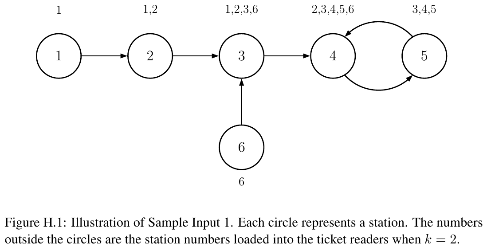

ICPC World Finals 2019 · Problem H
Mr. Hobson has retired from running a stable and has invested in a more modern form of transport, trains. He has built a rail network with n stations. However, he has retained his commitment to free the passenger from the burden of too many choices: from each station, a passenger can catch a train to exactly one other station. Such a journey is referred to as a leg. Note that this is a one-way journey, and it might not be possible to get back again.
Hobson also offers exactly one choice of ticket, which allows a passenger to travel up to k legs in one trip. At the exit from each station is an automated ticket reader (only one, so that passengers do not need to decide which to use). The reader checks that the distance from the initial station to the final station does not exceed k legs.
Each ticket reader must be programmed with a list of valid starting stations, but the more memory this list needs, the more expensive the machine will be. Help Hobson by determining, for each station A, the number of stations (including A) from which a customer can reach A in at most k legs.

The first line of input contains two integers n and k, where n (2 ≤ n ≤ 5·105) is the number of stations and k (1 ≤ k ≤ n − 1) is the maximum number of legs that may be traveled on a ticket. Then follow n lines, the ith of which contains an integer di (1 ≤ di ≤ n and di ≠ i), the station which may be reached from station i in one leg.
Output n lines, with the ith line containing the number of stations from which station i can be reached in at most k legs.
6 2 2 3 4 5 4 3
1 2 4 5 3 1
5 3 2 3 1 5 4
3 3 3 2 2